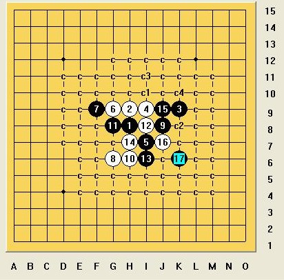

大残月最强4的一些必胜思路
#1 大残月最强4的一些必胜思路作者：逆刃 发表时间：2011-2-11 22:46:15
公布大残月棋谱很长时间了，自从那会开始就没怎么拆过，期间也有江湖传言说一打已经必胜了，但一直也没有谁肯定的给出答案，由于现在也没什么时间来拆棋，只是简单说一下，对于最强的那个猥琐4（一打都没必胜的那个），谈谈我的思路。
=======上图对应的爱五子棋谱代码如下，以便你拆解：========
h8h9k9i9i7
======================================================
我觉得这个5最强。
目前唯一的6如下。
=======上图对应的爱五子棋谱代码如下，以便你拆解：========
h8h9k9i9i7g9f9
======================================================
其中，白棋8手在G8和J8最强。
首先说说J8这个点。黑棋9手K7，我这里现在白棋10手只有J7点没有解决。我的思路是这样的。
=======上图对应的爱五子棋谱代码如下，以便你拆解：========
h8h9k9i9i7g9f9j8k7j7j6k6i8
======================================================
=======上图对应的爱五子棋谱代码如下，以便你拆解：========
h8h9k9i9i7g9f9j8k7j7j6l8i8
======================================================
下面在说说另外一个8。最强的10手如下。其余的不难。
=======上图对应的爱五子棋谱代码如下，以便你拆解：========
h8h9k9i9i7g9f9g8g10j8
======================================================
对于这路变化，白棋最强的一路如下。
=======上图对应的爱五子棋谱代码如下，以便你拆解：========
h8h9k9i9i7g9f9g8g10j8f7h10g11f8i11
======================================================
黑棋15手后白棋只有下在H11和H12。
对于这两个点，黑棋可以下面这样做棋。
=======上图对应的爱五子棋谱代码如下，以便你拆解：========
h8h9k9i9i7g9f9g8g10j8f7h10g11f8i11h11e7g7e8
======================================================
=======上图对应的爱五子棋谱代码如下，以便你拆解：========
h8h9k9i9i7g9f9g8g10j8f7h10g11f8i11h11e7e8d8
======================================================
然后黑棋留一手盖白棋眠三。对于跳16，黑棋在H13点盖住后，下面杀法相似。
华丽的分割线。
=======上图对应的爱五子棋谱代码如下，以便你拆解：========
h8h9k9i9j9
======================================================
另外我觉得这个5也挺不错的。
=======上图对应的爱五子棋谱代码如下，以便你拆解：========
h8h9k9i9j9i8i7j7g10
======================================================
常见的一路变化，白棋其实在下面已经没有什么力量了，黑棋的局面大好，以前我地毯掉了大部分，现在电脑坏了谱也没了，我觉得这个局面的话黑棋要取胜不难，做地毯谱的话比较费劲。但是这个5存在一个比较猥琐的强6，如下：
=======上图对应的爱五子棋谱代码如下，以便你拆解：========
h8h9k9i9j9k8
======================================================
这个6挺强，没有深入研究过，不知道7手下哪好。
华丽的分割线。
另外一个5。
=======上图对应的爱五子棋谱代码如下，以便你拆解：========
h8h9k9i9g9
======================================================
这个5其实是比较保守的下法，但是实战的话也无不是一个很好的选点。
=======上图对应的爱五子棋谱代码如下，以便你拆解：========
h8h9k9i9g9i7j7
======================================================
7手控制下法正在被越来越多的人使用，确
#2 Re:大残月最强4的一些必胜思路作者：失落刀 发表时间：2011-2-11 23:17:28
=======上图对应的爱五子棋谱代码如下，以便你拆解：========
h8h9k9i9j9k8l8
======================================================
这个7看着不错，不过没有研究。。
----------------------------------------------======================---------------------------
=======上图对应的爱五子棋谱代码如下，以便你拆解：========
h8h9k9i9f9
======================================================
这个5据说实战中黑胜率很高。
［ 逆刃 于 2011-2-12 14:03:40 时花20金币送鲜花一朵］
#3 Re:大残月最强4的一些必胜思路作者：屏蔽 发表时间：2011-2-12 1:57:50
=======上图对应的爱五子棋谱代码如下，以便你拆解：========
h8h9k9i9i10
======================================================
每山口规则溪月峡月的打点都有这个形状，但是极少下。从道理上以及仅有的几盘实战，应该是黑棋可以很好地控制。
不知道有没有深入的研究。
［ 掌棋宣传员 于 2011-2-12 3:01:06 时花20金币送鲜花一朵］
［ 逆刃 于 2011-2-12 9:08:21 时花20金币送鲜花一朵］
#4 Re:大残月最强4的一些必胜思路作者：屏蔽 发表时间：2011-2-12 12:15:07
第四图：进攻方面，应该还能简洁不少；白棋反击不多，Bug应该难以出现。
 ed54.rar
ed54.rar［ 逆刃 于 2011-2-12 13:59:43 时奖励此帖[金币加 100 威望加1］
［ 空恨社小仙 于 2011-2-12 14:40:46 时花20金币送鲜花一朵］
#5 Re:Re:大残月最强4的一些必胜思路作者：空恨社小仙 发表时间：2011-2-12 14:39:30
赞@顶@顶顶顶@!!!!!!
#6 Re:大残月最强4的一些必胜思路作者：死劲哭 发表时间：2011-2-12 16:41:18
=======上图对应的爱五子棋谱代码如下，以便你拆解：========
h8h9k9i9i7g9f9g8f7g10g7h7j8h6
======================================================
#7 Re:大残月最强4的一些必胜思路作者：罗志强 发表时间：2012-11-25 1:18:40
无意间看见逆刀老师发的这篇文 就试着学拆一下 可是怎么拆也拆不出来这个10 哪位高人可否指导一下 
#8 Re:大残月最强4的一些必胜思路作者：日月丽天 发表时间：2012-11-25 8:49:07
楼上大残月一变化，代逆刃老师回复一下，是这个11可以地毯
#9 Re:大残月最强4的一些必胜思路作者：罗志强 发表时间：2012-11-27 0:58:16
 谢谢日月的指教 俺是新手 才刚学 这会再来试试
谢谢日月的指教 俺是新手 才刚学 这会再来试试
#10 Re:大残月最强4的一些必胜思路作者：潇洒 发表时间：2012-11-27 2:47:29
围观。。#11 Re:大残月最强4的一些必胜思路作者：炫飞风轻尘 发表时间：2012-11-27 5:47:09
围观#12 Re:大残月最强4的一些必胜思路作者：罗志强 发表时间：2012-11-28 22:18:20
不会走了 走了几天 还是走不出#13 Re:大残月最强4的一些必胜思路作者：逆刃 发表时间：2012-11-28 23:17:17
13手先在J7活三，然后再F7。#14 Re:大残月最强4的一些必胜思路作者：罗志强 发表时间：2012-11-30 2:57:28
 謝謝逆刀老師的指教
謝謝逆刀老師的指教
#15 Re:大残月最强4的一些必胜思路作者：棋元道 发表时间：2012-12-13 0:13:34
#16 Re:大残月最强4的一些必胜思路作者：棋元道 发表时间：2012-12-13 0:15:31
#17 Re:大残月最强4的一些必胜思路作者：棋元道 发表时间：2012-12-13 0:18:48
#18 Re:大残月最强4的一些必胜思路作者：逆刃 发表时间：2012-12-13 22:33:34
问题一（15楼）：下面的17必胜；
问题二（16楼）：答案是不确定，现在确定的是9手如果下I10必败，若下F7，白棋右上有一定进攻手段，结论未知；
问题三（17楼）：必胜路线如下：
#19 Re:大残月最强4的一些必胜思路作者：棋元道 发表时间：2012-12-13 23:00:18
#20 Re:大残月最强4的一些必胜思路作者：棋元道 发表时间：2012-12-13 23:01:29
那个9手走在I10必败#21 Re:大残月最强4的一些必胜思路作者：棋元道 发表时间：2012-12-13 23:02:53
#22 Re:大残月最强4的一些必胜思路作者：棋元道 发表时间：2012-12-13 23:03:27
#23 Re:大残月最强4的一些必胜思路作者：棋元道 发表时间：2012-12-13 23:06:18
我刚刚自己解决了12#24 Re:大残月最强4的一些必胜思路作者：棋元道 发表时间：2012-12-14 0:17:09
12那个终于解决了
#25 Re:大残月最强4的一些必胜思路作者：棋元道 发表时间：2012-12-14 0:18:55
#26 Re:大残月最强4的一些必胜思路作者：罗志强 发表时间：2012-12-15 13:13:56
#27 Re:大残月最强4的一些必胜思路作者：罗志强 发表时间：2012-12-15 13:15:09
#28 Re:大残月最强4的一些必胜思路作者：罗志强 发表时间：2012-12-15 13:16:06
#29 Re:大残月最强4的一些必胜思路作者：罗志强 发表时间：2012-12-15 13:20:44
 怎么这么多个
怎么这么多个  估计俺电脑有点问题 请版大 删了多馀的
估计俺电脑有点问题 请版大 删了多馀的［ 失落刀 于 2012-12-15 13:32:37 时奖励此帖[金币加 100 威望加1］0+1
［此帖子已被 失落刀 在 2012-12-15 13:39:19 编辑过］
［ 失落刀 于 2012-12-15 14:12:08 时花20金币送鲜花一朵］
#30 Re:大残月最强4的一些必胜思路作者：棋元道 发表时间：2012-12-15 13:50:10
怎么发了3次#31 Re:大残月最强4的一些必胜思路作者：棋元道 发表时间：2012-12-17 23:51:22
#32 Re:大残月最强4的一些必胜思路作者：逆刃 发表时间：2012-12-18 13:25:08
15手必胜。
另外LS提问的时候最后一次一个问题，太多了都不知道你重点是问哪个。
#33 Re:大残月最强4的一些必胜思路作者：棋元道 发表时间：2013-2-9 16:35:24
这个15拆不出，请教一下逆刀老师#34 Re:大残月最强4的一些必胜思路作者：镇平 发表时间：2013-10-1 22:02:15
这个5只有一个强6没解决，
#35 Re:镇平【==Re:大残月最强4的一些必胜思路==】作者：日月丽天 发表时间：2013-10-2 8:16:54
问题是这个唯一6之后很平衡。#36 Re:大残月最强4的一些必胜思路作者：镇平 发表时间：2013-10-2 8:51:13
这个5手，其它6都好解决，唯6手i9点平衡点无法解决#37 Re:大残月最强4的一些必胜思路作者：业余九级菜手 发表时间：2014-3-8 20:59:13
只剩这个8手没败。
#38 Re:业余九级菜手【==Re:大残月最强4的一些必胜思路==】作者：菜菜的郁郁 发表时间：2014-3-10 15:40:14
大师还几个10没解决#39 Re:大残月最强4的一些必胜思路作者：业余九级菜手 发表时间：2014-3-13 6:44:51
只有这个10了。
#40 Re:大残月最强4的一些必胜思路作者：平凡人生 发表时间：2014-3-15 13:23:27

#41 Re:大残月最强4的一些必胜思路作者：日月丽天 发表时间：2014-3-15 16:10:09
［ 平凡人生同学于 2014-3-16 16:41:52 时花20金币送鲜花一朵］
［ 平凡人生同学于 2014-3-16 16:41:52 时花20金币送鲜花一朵］
［ 平凡人生同学于 2014-3-16 16:41:52 时花20金币送鲜花一朵］
［ 平凡人生同学于 2014-3-16 16:41:52 时花20金币送鲜花一朵］
［ 平凡人生同学于 2014-3-16 16:41:52 时花20金币送鲜花一朵］
#42 Re:大残月最强4的一些必胜思路作者：镇平 发表时间：2014-3-15 20:59:03
丽天，咋发图的
找不到点了
#43 Re:大残月最强4的一些必胜思路作者：镇平 发表时间：2014-3-15 21:13:02
回40楼这个9好杀的多#44 Re:大残月最强4的一些必胜思路作者：镇平 发表时间：2014-3-15 21:15:38
回40楼［此帖子已被 镇平 在 2014-3-15 21:19:14 编辑过］
［ 平凡人生同学于 2014-3-16 16:42:43 时花20金币送鲜花一朵］
［ 平凡人生同学于 2014-3-16 16:42:43 时花20金币送鲜花一朵］
［ 平凡人生同学于 2014-3-16 16:42:43 时花20金币送鲜花一朵］
［ 平凡人生同学于 2014-3-16 16:42:43 时花20金币送鲜花一朵］
［ 平凡人生同学于 2014-3-16 16:42:43 时花20金币送鲜花一朵］
#45 Re:大残月最强4的一些必胜思路作者：逆刃 发表时间：2014-3-16 0:12:57
试试看！顺便问下，这个11手的局面现在是什么情况了，16之前都是唯一吗
#46 Re:大残月最强4的一些必胜思路作者：镇平 发表时间：2014-3-16 8:11:57
［此帖子已被 镇平 在 2014-3-16 8:23:15 编辑过］
#47 Re:大残月最强4的一些必胜思路作者：平凡人生 发表时间：2014-3-16 16:44:59
#48 Re:大残月最强4的一些必胜思路作者：逆刃 发表时间：2014-3-16 18:02:50
已经有杀了还在寻找另一套杀，只能说LS精神可嘉，上图理论上有必胜，有兴趣的话慢慢拆应该不难。
#49 Re:平凡人生【==Re:大残月最强4的一些必胜思路==】作者：逆刃 发表时间：2014-3-16 18:34:32
周末无聊，做点好事~~

必败16地毯.rar［ 菜菜的郁郁同学于 2014-3-17 8:02:36 时花20金币送鲜花一朵］
［ 菜菜的郁郁同学于 2014-3-17 8:02:36 时花20金币送鲜花一朵］
［ 菜菜的郁郁同学于 2014-3-17 8:02:36 时花20金币送鲜花一朵］
［ 菜菜的郁郁同学于 2014-3-17 8:02:36 时花20金币送鲜花一朵］
［ 菜菜的郁郁同学于 2014-3-17 8:02:36 时花20金币送鲜花一朵］
［ 平凡人生同学于 2014-3-17 16:52:42 时花20金币送鲜花一朵］
［ 平凡人生同学于 2014-3-17 16:52:42 时花20金币送鲜花一朵］
［ 平凡人生同学于 2014-3-17 16:52:42 时花20金币送鲜花一朵］
［ 平凡人生同学于 2014-3-17 16:52:42 时花20金币送鲜花一朵］
［ 平凡人生同学于 2014-3-17 16:52:42 时花20金币送鲜花一朵］
#50 Re:大残月最强4的一些必胜思路作者：镇平 发表时间：2014-3-16 21:57:52
看这一路能否地毯
#51 Re:大残月最强4的一些必胜思路作者：逆刃 发表时间：2014-3-16 22:27:58
LS先发个共享再说呗~#52 Re:逆刃【==Re:平凡人生【==Re:大残月最强4的一些必胜思路==】==】作者：业余九级菜手 发表时间：2014-3-17 7:32:55
引用：本来不想发的，看到逆刃发上来了，我也就发了吧。
原文由 逆刃 发表于 2014-3-16 18:34:32 :周末无聊，做点好事~~
大残月一打败8.rar［ 平凡人生同学于 2014-3-17 16:50:02 时花20金币送鲜花一朵］
［ 平凡人生同学于 2014-3-17 16:50:02 时花20金币送鲜花一朵］
［ 平凡人生同学于 2014-3-17 16:50:02 时花20金币送鲜花一朵］
［ 平凡人生同学于 2014-3-17 16:50:02 时花20金币送鲜花一朵］
［ 平凡人生同学于 2014-3-17 16:50:02 时花20金币送鲜花一朵］
［ 逆刃同学于 2014-3-17 19:09:37 时花20金币送鲜花一朵］
#53 Re:大残月最强4的一些必胜思路作者：gerbo 发表时间：2014-3-18 6:54:54
九级的棋谱，我下载了，可是没看懂：#54 Re:大残月最强4的一些必胜思路作者：gerbo 发表时间：2014-3-18 7:10:24
用选择文件再上传，也发不出图。哎~~［此帖子已被 gerbo 在 2014-3-18 7:12:06 编辑过］
#55 Re:大残月最强4的一些必胜思路作者：gerbo 发表时间：2014-3-18 7:23:18
压缩文件也发不出，哎，请删楼，管理员~~~［此帖子已被 gerbo 在 2014-3-18 7:24:10 编辑过］
#56 Re:大残月最强4的一些必胜思路作者：业余九级菜手 发表时间：2014-3-18 8:12:32
楼上说这个变化吗？
#57 Re:大残月最强4的一些必胜思路作者：平凡人生 发表时间：2014-3-18 9:06:58
#58 Re:大残月最强4的一些必胜思路作者：gerbo 发表时间：2014-3-18 9:24:05
九级，我为我的无知跟鲁莽道歉，我的语气不太好，所以发表后也有点担心语气问题。#59 Re:大残月最强4的一些必胜思路作者：业余九级菜手 发表时间：2014-3-18 9:59:11
没什么，不用道什么歉啊。若有错，尽量提出，感激不尽。
这个21就是终结者扫的结果。我的谱全是08破解版扫的，BUG在所难免。
这个更简单。
#60 Re:大残月最强4的一些必胜思路作者：业余九级菜手 发表时间：2014-3-18 12:53:07
我就拆到这个分支了。
希望高手们帮忙解决++++++UUUUUU
#61 Re:大残月最强4的一些必胜思路作者：棋元道 发表时间：2014-3-19 22:19:01
h8h9k9i9i7g9f9j8k7j7j6k6i8g8这个很难6上面走15很复杂，谁能解决一下#62 Re:大残月最强4的一些必胜思路作者：镇平 发表时间：2014-3-20 8:03:11
#63 Re:业余九级菜手【==Re:大残月最强4的一些必胜思路==】作者：镇平 发表时间：2014-3-21 10:55:07
引用：
原文由 业余九级菜手 发表于 2014-3-18 12:53:07 :我就拆到这个分支了。
希望高手们帮忙解决++++++UUUUUU
［此帖子已被 镇平 在 2014-3-21 10:56:32 编辑过］
#64 Re:棋元道【==Re:大残月最强4的一些必胜思路==】作者：业余九级菜手 发表时间：2014-3-21 13:24:58
引用：
原文由 棋元道 发表于 2014-3-19 22:19:01 :
h8h9k9i9i7g9f9j8k7j7j6k6i8g8这个很难6上面走15很复杂，谁能解决一下
棋无道，我看了你好几个回贴，发现你一个问题。。。。。。
#65 Re:大残月最强4的一些必胜思路作者：棋元道 发表时间：2014-3-21 22:55:32
谢谢黑白配，C1那里终于解决了#66 Re:大残月最强4的一些必胜思路作者：棋元道 发表时间：2014-3-21 23:56:24
16J10 17J10 18F7貌似杀不掉，19挡下，20K10和I12怎么杀#67 Re:大残月最强4的一些必胜思路作者：棋元道 发表时间：2014-3-22 0:39:47
17J11写错#68 Re:大残月最强4的一些必胜思路作者：棋元道 发表时间：2014-3-22 1:27:20
棋谱有不少错误啊，16手的G6 17I10 18J10杀不掉#69 Re:大残月最强4的一些必胜思路作者：棋元道 发表时间：2014-3-22 1:36:51
换了个21可以了#70 Re:棋元道【==Re:大残月最强4的一些必胜思路==】作者：镇平 发表时间：2014-3-22 8:05:40
哪个点解决不了发图这个17解决
［ 失落刀 于 2014-3-24 18:40:21 时奖励此帖[金币加 100 威望加1］
#71 Re:棋元道【==Re:大残月最强4的一些必胜思路==】作者：镇平 发表时间：2014-3-22 8:08:10
简单杀#72 Re:大残月最强4的一些必胜思路作者：平凡人生 发表时间：2014-3-22 10:33:58
［此帖子已被 平凡人生 在 2014-3-22 10:36:19 编辑过］
#73 Re:大残月最强4的一些必胜思路作者：棋元道 发表时间：2014-3-22 13:22:51
h8h9k9i9i7g9f9j8k7j7j6k6i8g8g10j10原来的16可以暴力解决了，左下角猛攻，镇平的17比较快#74 Re:大残月最强4的一些必胜思路作者：棋元道 发表时间：2014-3-22 13:27:15
只剩下G8的了，9手走G10还是G7好，发来大家研究一下，我觉得G7可以希望大点，G10我研究较少#75 Re:大残月最强4的一些必胜思路作者：镇平 发表时间：2014-3-24 10:36:15
#76 Re:镇平【==Re:大残月最强4的一些必胜思路==】作者：平凡人生 发表时间：2014-3-24 13:52:09
ShowPost.asp?ThreadID=20846#77 Re:大残月最强4的一些必胜思路作者：棋元道 发表时间：2014-3-24 17:45:50
有谁发发G10一路的情况， G7一路2个强12很难［ 形象哥同学于 2014-3-27 20:50:46 时花250金币拍了你一板砖］
#78 Re:大残月最强4的一些必胜思路作者：镇平 发表时间：2014-3-24 18:45:39
G10的点也难啊，拆不动了
#79 Re:大残月最强4的一些必胜思路作者：棋元道 发表时间：2014-5-1 13:26:44